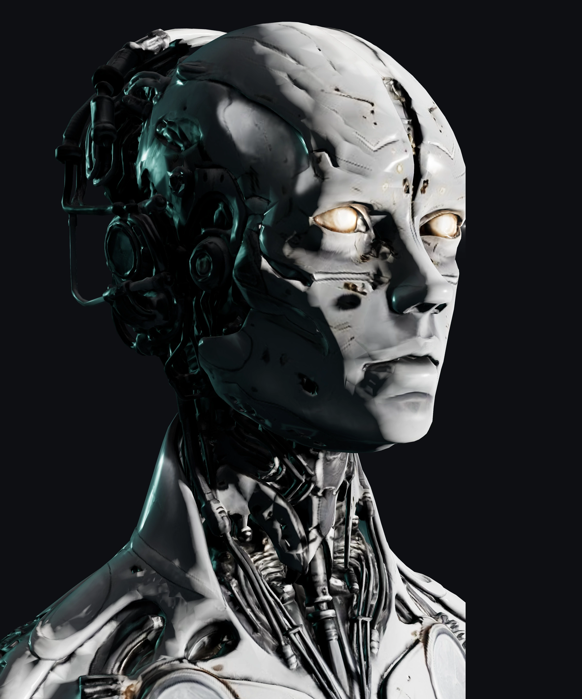

No consensus,
no call.
Every agent reads the chart from one angle — structure, liquidity, timing, macro, order flow, psychology. They debate in silence. If they don’t agree, there is no setup. Period.
Consensus reached. One card with exact entry, SL, TP1, TP2, size and expiry.
No consensus. That’s an outcome too — with the exact level to watch and the trigger that would still produce a card. Not trading is a position.
Confidence = honest confluence count. Minimum 65% to trade. Capped at 90%. Never inflated.
How a card is made.
The floor.
Twelve desks. Each reads the chart from exactly one angle. Eight vote in the consensus, three weigh context and conviction, one guards the discipline.
“Momentum is your friend.”
“What goes up can fall.”
“Trend is direction. Direction is edge.”
“The right moment, not just any moment.”
“Follow the liquidity.”
“Discipline. Precision. Execution.”
“See the bigger picture.”
“Protect first, profit second.”
“Capital doesn’t lie.”
“Read the mood of the market.”
“Every outcome. One edge.”
“The data is not concerned with how you feel about it.”
Shrink doesn’t trade — he watches. Every trade is logged, every pattern registered: revenge trades, overtrading, oversized risk after a loss. Zero sympathy, only data. Including your distance to prop-firm limits: FTMO · Topstep · The5ers · FundedNext.
Anatomy of a card.
Confidence & sizing.
| ≤3 confluences | NO TRADE (below 65%) |
| 4 confluences | 65-69% · A-setup minimum |
| 5-6 confluences | 70-79% · Solid, standard |
| 7-8 confluences | 80-90% · A+, size up |
| 65-69% | 0.5% risk |
| 70-74% | 1.0% risk |
| 75-79% | 1.5% risk |
| 80-84% | 2.0% risk |
| 85-90% | 2.5% risk |
Trading DNA.
ADR 150-300p. London 09:30-11:00 = HUNT only (sweep risk high). Best window: NY 15:30-17:00. Inverse DXY always applies.
Small ADR. Prime: 09:30-11:00 + 13:00-13:30 Silver Bullet. Closed after 14:00. No NY trades.
Prime window: 09:30-10:00 ONLY. Closed after 13:00. Requires 5+ confluences minimum. Handle with care.
Small sample. Prime: 15:30-17:00. NAS100 inverse VIX. US30 = 1H OBs most reliable. Avoid Fed/CPI windows.
Session timing (Dubai GMT+4).
| Dubai Time | Session | Assets | Notes |
|---|---|---|---|
| 08:55-09:30 | Prime | GER40 | DAX open. All others dead. |
| 09:00-09:30 | Judas | GBP/EUR pairs | NO ENTRIES on GBPUSD / EURUSD / GBPJPY. Fakeout window. |
| 09:30-10:00 | Prime | GBPUSD, GBPJPY, XAUUSD | London Sweep window. XAUUSD: HUNT mode only. |
| 10:00-11:00 | Prime | EURUSD | GBPUSD / GBPJPY / XAU active but secondary. |
| 11:00-13:00 | Active | EURUSD, GBPUSD | Rest dead. Momentum fades. Reduce size. |
| 13:00-13:30 | Prime | EURUSD (Silver Bullet) | Strategy B FVG window. Tight timing — 30min only. |
| 13:30-15:00 | Dead | — | Lunch dead. No prime setups. |
| 15:00-15:30 | Incoming | XAUUSD, USDJPY, NAS100, US30 | NY pre-open. Watch, don’t trade yet. |
| 15:30-17:00 | Prime | XAU, USDJPY, NAS100, US30, GBPJPY | Best overall window. Forex dead. |
| 17:00-18:30 | Prime | XAUUSD, USDJPY | NAS100 / US30 active. First 10 trades = 50% size on cont. |
| 18:30-20:00 | Reduced | XAUUSD only | 50% size. All others dead. |
| 20:00+ | Dead Zone | — | NO ENTRIES. Hard gate. Asia session = dead. |
The three strategies.
Sweep of prior high/low → rejection → return to OB. Needs clean displacement + confirmed sweep. XAU sweep must be 70%+ clean.
15M FVG from last 3 candles. Must be HTF aligned. 30-min window only. EURUSD primary. Expires fast — watch valid-until time.
Trend pullback to OB/FVG. HTF aligned. NY cont (17:00-18:30): XAU, USDJPY, NAS100, US30 only. 50% size first 10 trades.
Hard rules.
drawdown: reset issued.Inside the Discord.
Trading forex, indices, metals and CFDs carries a high risk of loss and is not suitable for everyone. Past results are no guarantee of future performance. All content on this site and in the Discord is analytical and educational in nature; no individual investment advice is given. Never trade with money you cannot afford to lose.